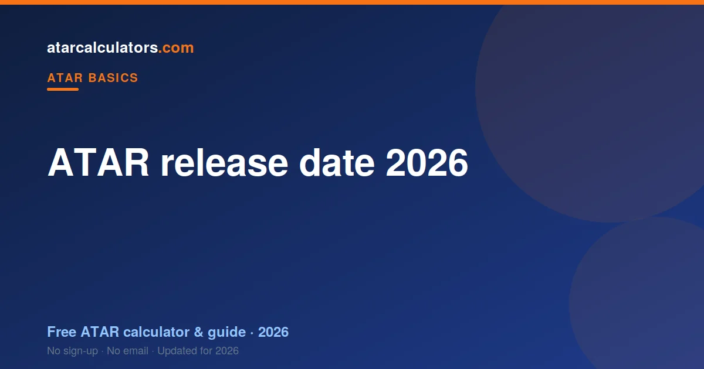
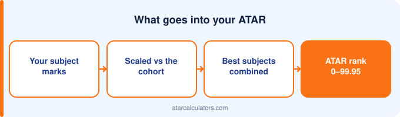

ATARs are released between 10 and 20 December 2026. Victoria releases first on Thursday 10 December at 7am AEDT. South Australia and the Northern Territory follow on Monday 15 December at 8:30am ACDT. New South Wales, the ACT and Tasmania release on Wednesday 16 December (NSW/ACT at 9am AEDT). Queensland releases on Friday 18 December at 9am AEST, and Western Australia releases last on Sunday 20 December at 8am AWST.
Key takeaways
- ATARs are released between 10 and 20 December 2026.
- Victoria releases first on 10 December at 7am AEDT.
- Western Australia releases last on 20 December at 8am AWST.
- NSW, ACT and Tasmania release on 16 December (NSW/ACT at 9am AEDT).
- Queensland releases on 18 December, two days after QCE results.
- Offer rounds follow within days, starting 23–24 December in most states.
- Have your student number, PIN and personal email ready before release day.

Why ATAR release dates differ by state
Each state and territory runs its own senior secondary certificate, its own external examination timetable, and its own tertiary admissions centre. The release date depends on when exams finish, when marking is completed, and when the admissions centre has finished scaling and calculating every student's rank. There is no single national release date because there is no single national senior secondary system.
The ATAR is a nationally comparable rank, but it is calculated state by state, from state-specific results, by state-specific admissions centres. Victoria finishes exams and marking first, which is why it releases first. Western Australia finishes later, which is why it releases last. The ten-day spread also means that students in different states are making change-of-preference decisions at different times, and offer rounds are staggered accordingly. If you are applying interstate, you need to know both your home state's release date and the offer round dates for the state you are applying to.
The pattern is very consistent year to year. Victoria has released in the first half of December every year since the ATAR was introduced. NSW and the ACT have released in mid-December since 2009. Queensland joined the national system in 2020 and releases in mid-to-late December. Western Australia has released in the last week before Christmas for over a decade. The general ordering is fixed: Victoria first, WA last, everyone else in between.
Victoria (VCE): 10 December 2026, 7am AEDT
Victoria is the first state to release ATARs in 2026. VCE results and ATARs are released together at 7:00am AEDT on Thursday 10 December 2026 through the VCE Results and ATAR Service. You will need your VCAA student number to register, and paid VTAC applicants receive an email registration for a My eQuals account to view and share an official digital ATAR statement.
After your ATAR is released, there is a short change of preference period before December offers are released. VTAC recommends listing your courses in order of preference, putting the course you most want at the top. The change of preference deadline for the December offer round is 12 December 2026 — just two days after release. If you miss it, VTAC's January round allows changes until mid-January and releases offers in mid-January.
If your ATAR is lower than you hoped, keep your dream course at the top of your preference list — selection ranks change year to year. VTAC's Special Entry Access Scheme (SEAS) can adjust your aggregate for equity, location or special circumstances, applied before the ATAR is recalculated. Every major Victorian university runs a pathway: Monash, Deakin, RMIT and La Trobe all offer diplomas that articulate into degrees.
South Australia and the Northern Territory (SACE/NTCET): 15 December 2026, 8:30am ACDT
South Australia and the Northern Territory release on Monday 15 December 2026 at 8:30am ACDT. SACE results and the SATAC ATAR are released together through SACE Students Online. Your ATAR appears on your Tertiary Entrance Statement, which you can access digitally; from 2025 it is no longer posted out. SATAC's phone lines open from 8:30am on the day.
South Australia and the Northern Territory share a single ATAR calculation authority: SATAC. The Northern Territory Certificate of Education and Training (NTCET) runs on the SACE framework, which is why Territory students follow South Australian rules and SATAC calculates their ATAR.
SATAC's Universities Equity Scheme adds up to 5 points to your aggregate, and the Language, Literacy and Mathematics Scheme adds 2 or 4 points, for a combined maximum of 9. The first undergraduate offer round including Year 12 results is released in mid-January 2027. Flinders, UniSA and the University of Adelaide all run foundation studies programs and diploma pathways, and SATAC's multiple offer rounds through January and February mean a missed first round is not the end. For Northern Territory students, Charles Darwin University runs a range of enabling and preparation programs.
New South Wales and the ACT (HSC): 16 December 2026, 9am AEDT
New South Wales and the ACT release on Wednesday 16 December 2026 at 9:00am AEDT. HSC results are released earlier that morning, from 6am, and ATARs are released at 9am by UAC. You access your ATAR on the UAC website with your Year 12 student number (8 digits) and your UAC PIN (4 digits). You can also claim your ATAR as a digital credential in CredFolio. ATARs between 0.00 and 30.00 are recorded as "30 or less", and students who have not met the requirements receive "not eligible".
The first main offer round for Year 12 students in NSW is December Round 2, released on 23 December at 7:30am. To be considered, you need your preference list finalised by 11:59pm on 18 December. UAC's advice is to keep your dream course at the top of your list, because offers are made to the highest preference you qualify for.
UAC's Educational Access Scheme (EAS) can add up to 5 points to your selection rank, and some institutions offer up to 15 points depending on the degree. If December Round 2 does not deliver, January Rounds 1 and 2 follow in mid-January. TAFE NSW offers a wide range of diplomas that articulate into degrees, and the UNSW, UTS, Macquarie and Western Sydney preparation programs are well established. For ACT students, University of Canberra College and ANU College offer foundation and diploma pathways.
Tasmania (TCE): 16 December 2026
Tasmania releases on Wednesday 16 December 2026. TASC emails your results from the morning of 16 December, and printed documents are posted by the end of January. Your ATAR from UTAS is released around the same time, and appears on your Tertiary Entrance Statement if you are eligible.
TASC's deadline to update your email address is 15 December 2026, with late updates accepted until 5pm Friday 18 December. Results are progressively emailed, so your classmates may receive theirs earlier or later than you. The emailed results are more detailed than the posted ones: only the email version includes your criterion-by-criterion ratings, so save it.
Tasmania made a minor change to its ATAR calculation from 2025 onwards. The ATAR is now calculated using the eligible student's best results in Level 3 and 4 courses over two years, removing the requirement that three results be from the final year. The change was about fairness: the timing of your best results matters less, so you can focus on achieving your highest possible results. UTAS runs preparation programs and UTAS College offers pathway options into degrees. The University Connections Program (UCP) allows high-achieving Year 11 and 12 students to study university-level units while still at school.
Queensland (QCE): 18 December 2026, 9am AEST
Queensland releases on Friday 18 December 2026 at 9:00am AEST. QCE subject results are released earlier, on Wednesday 16 December 2026, but the ATAR is released two days later, on 18 December, by QTAC. This two-day gap is unique to Queensland and catches some students by surprise.
You access your ATAR through the QTAC ATAR Portal. You need your full name, date of birth, LUI number, and a personal email address (do not use your school email). QTAC has two separate portals: one for the ATAR, and one for applying to tertiary study. If you want to apply for university, you need to create both accounts.
If you are "ATAR ineligible", it means you have not yet qualified. You can continue to study and accumulate QCE subjects and VET qualifications until you are eligible. Eligibility requires five General subjects, or four General plus one Applied or VET, with a C or better in an English subject. If you believe there has been an error, you can request an ATAR Appeal between 18 December 2026 and 31 January 2027. Queensland offer rounds run on 14, 21 and 28 January 2027, giving QLD students three chances in January.
Western Australia (WACE): 20 December 2026, 8am AWST
Western Australia releases last, on Sunday 20 December 2026 at 8:00am AWST. TISC releases your ATAR, final scaled marks in WACE ATAR courses, and your Universities Admission Advice Letter (UAAL) online. Students with at least one scaled score can print an informal PDF of their UAAL from the TISC website.
After results are released, TISC uses your preferences and scores to decide which offer you receive. If you did not get the results you were expecting, update your course preferences on the TISC website before the main round deadline. TISC also operates an automatic safety net: if you update your preferences by the second round deadline, your main round offer stays valid until you receive a new one or decide to accept it. This means you can hold a place while waiting for a better offer.
Western Australia's ATAR includes a distinctive Tertiary Entrance Aggregate (TEA) with 10% bonuses for a LOTE and the two mathematics subjects (Mathematics Methods and Mathematics Specialist). These bonuses are embedded in the TEA itself, not applied as post-ATAR adjustment factors. The maximum TEA is 430.
IB students: 18 December 2026
International Baccalaureate students in Australia receive their IB results on 17 December 2026, and their IB Admissions Score (IBAS) — the ATAR equivalent used by Australian universities — on 18 December 2026. UAC notifies NSW and ACT IB applicants of their IBAS via email on Friday 18 December 2026. VTAC also releases the IB Notional ATAR on 18 December. The IBAS is the number universities use, not your raw IB score. The conversion is calculated by ACTAC and gives a fine-grained ATAR equivalent, more precise than a simple points-to-rank table.
How to access your ATAR
| State | Portal | What you need |
|---|---|---|
| VIC | VCE Results and ATAR Service | VCAA student number, VTAC student number |
| SA/NT | SACE Students Online | SACE student number, login |
| NSW/ACT | UAC website | Year 12 student number, UAC PIN |
| TAS | TASC email / UTAS | TASC login, email |
| QLD | QTAC ATAR Portal | Full name, DOB, LUI number, personal email |
| WA | TISC website | TISC login |
| IB | UAC email (IBAS) | UAC application details |
UAC advises students to set up their CredFolio digital wallet a couple of days before release, because CredFolio sends you an email invitation with a unique registration code. Set up every login well before release day — not on the day itself, when portals are under maximum load.
What to do on ATAR release day
1. Access your ATAR early. Portals can slow down under heavy traffic. Try to log in as soon as results are released. If the portal is slow, wait a few minutes rather than refreshing repeatedly.
2. Check your ATAR Advice Notice or Tertiary Entrance Statement. Your official statement shows your ATAR, the courses that contributed to it, and (in some states) your scaled scores. Download and save a copy. In NSW, download your ATAR Advice Notice from UAC. In VIC, your My eQuals statement is the officially verified version.
3. Review your preferences. Check the change of preference deadline for your state. In Victoria it is 12 December; in NSW/ACT, 18 December; in WA, 20 December. Miss it and you cannot change preferences until the next round, which may be in mid-January.
4. Understand your selection rank. Universities apply adjustment factors for equity, location, subject performance or special circumstances, and the ATAR plus these adjustments is your selection rank. It is the selection rank that is compared against a course's cut-off. Use our selection rank calculator to model this.
5. Don't panic if your ATAR is lower than you hoped. A lower-than-expected ATAR feels devastating in the moment, but it is not the end of your university ambitions. Keep your dream course as your first preference, research your adjustment factors, and consider related pathways: a related degree with a lower selection rank, a foundation or pathway program, TAFE, or transferring after a year of study.
If your ATAR is lower than expected: state-by-state
Victoria: The change-of-preference deadline is 12 December, just two days after release. VTAC's SEAS adjusts your aggregate for equity, and every major Victorian university runs a diploma that articulates into a degree. The January round allows changes until mid-January.
New South Wales and the ACT: UAC's EAS can add up to 5 points (some institutions up to 15). If December Round 2 does not deliver, January Rounds 1 and 2 follow in mid-January. TAFE NSW and the university preparation programs at UNSW, UTS, Macquarie and Western Sydney are well established.
South Australia and the Northern Territory: SATAC offers up to 9 adjustment points through the Equity Scheme and Language/Literacy/Mathematics Scheme. Foundation programs at Flinders, UniSA and the University of Adelaide, and enabling programs at Charles Darwin University, provide strong pathways.
Queensland: QTAC applies adjustments to your selection rank, not your ATAR. QUT, UQ, Griffith and JCU all run diploma and foundation programs. TAFE Queensland's diploma programs provide a pathway into second-year university entry. Offer rounds on 14, 21 and 28 January give three chances in January alone.
Western Australia: TISC's automatic safety net means your main round offer stays valid while you update preferences. UWA, Curtin, Murdoch and ECU all run pathway programs. WA's TEA includes embedded bonuses for LOTE and the two maths subjects.
Tasmania: UTAS runs preparation programs and pathway options through UTAS College. The smaller cohort means admissions staff are more accessible. Talk directly to UTAS about options.
Offer rounds after ATAR release
| State | Offer round | Date |
|---|---|---|
| VIC | December course offers | 23 December 2026 |
| NSW/ACT | December Round 2 (main ATAR round) | 23 December 2026, 7:30am |
| WA | Main round offers | 24 December 2026 |
| QLD | January offer rounds | 14, 21 and 28 January 2027 |
| SA/NT | First undergraduate round | Mid-January 2027 |
Sources: VTAC, UAC, TISC, QTAC and SATAC key dates.
Getting your ATAR is not the same as getting an offer. After results, you finalise your preferences, and offers are made in rounds. The main first round usually arrives in January. Several more rounds follow through January and February, so a course you miss in the first round can still come through later.
Applying interstate: what to know
If you are applying to a university outside your home state, you are navigating two admissions systems at once. Your ATAR travels, but the selection rank does not always travel with it. The ATAR is a national rank, and universities treat an ATAR of 85 in Queensland as equivalent to an ATAR of 85 in Victoria. But the adjustment factors that convert your ATAR into a selection rank are administered by each state's admissions centre, not by the receiving university. A South Australian student eligible for 9 SATAC adjustment points does not automatically receive those points when applying to a NSW university.
You apply through the receiving state's admissions centre. To apply to a Victorian university, apply through VTAC. To apply to a NSW university, apply through UAC. To apply to a Queensland university, apply through QTAC. Check application deadlines carefully — they may be earlier than your home state's.
The offer round you receive may fall outside your home state's timeline. If you are a Victorian student applying to a NSW university, your ATAR is released on 10 December, and NSW December Round 2 offers are released on 23 December — the timing works. But if you are a Queensland student applying to a Victorian university, your ATAR is released on 18 December, and VTAC's December change-of-preference deadline is 12 December. You will need to use VTAC's January rounds instead.
What parents should know
Results day is stressful for students and for the people who love them. The most useful thing a parent can do is to be present without being intrusive, and to respond to the emotion before discussing the number. Whatever your child is feeling — relief, disappointment, joy, numbness — acknowledge it first. The best preference decisions are made the next day, not in the first ten minutes.
Know the pathways. Read about TAFE-to-university transfers, foundation programs, and internal transfers so you can offer them as calm options if needed. Check the change-of-preference deadline for your state and help your child keep track of it. Resist the urge to compare your child's ATAR to siblings, cousins or family friends, and avoid saying "don't worry about it" — the worry is real and deserves acknowledgment.
The ATAR is one number, produced by a statistical process, from a particular set of assessments, in a particular year. It is not a measure of who your child is or what they are capable of. A 2024 survey found that 64% of current Year 12s said they would not achieve an ATAR to protect their mental health, and 45% said they would not achieve an ATAR to avoid exam stress. Parents who frame the ATAR as one step in a longer journey — rather than a verdict — make a genuine difference.
Common questions
When is the ATAR released in 2026?
ATARs are released between 10 December and 20 December 2026, depending on your state. Victoria releases first on 10 December, and Western Australia releases last on 20 December.
What time is the ATAR released?
Times vary by state: Victoria at 7am AEDT, SA/NT at 8:30am ACDT, NSW/ACT at 9am AEDT, Tasmania on 16 December, Queensland at 9am AEST on 18 December, and WA at 8am AWST on 20 December.
Is the ATAR released at the same time as HSC/VCE/QCE results?
Not always. In Victoria, VCE results and ATARs are released together at 7am. In NSW, HSC results are released at 6am and ATARs at 9am. In Queensland, QCE results are released on 16 December but the ATAR is released two days later, on 18 December.
How do I access my ATAR?
Through your state's admissions centre portal: VTAC for Victoria, UAC for NSW/ACT, QTAC for Queensland, SATAC/SACE Students Online for SA/NT, TISC for WA, and TASC/UTAS for Tasmania.
What is the IBAS?
The IB Admissions Score (IBAS) is the ATAR equivalent for International Baccalaureate students. It is calculated by ACTAC and released on 18 December 2026 for November 2026 IB students.
Can I change my preferences after I receive my ATAR?
Yes. Each state has a change of preference window after ATAR release. In Victoria the deadline is 12 December, in NSW/ACT 18 December, and in WA 20 December.
What is a selection rank?
A selection rank is your ATAR plus any adjustment factors (bonus points) you are eligible for. It is the rank that is compared against a course's cut-off.
What if my ATAR is lower than I need?
You still have options: keep your dream course as your first preference, research your adjustment factors, consider a related degree with a lower cut-off, explore foundation or pathway programs, or start at TAFE and transfer.
When are university offers released?
Offer rounds vary by state. In Victoria, December offers are released on 23 December. In NSW, December Round 2 offers are released on 23 December. In WA, main-round offers are released on 24 December. Queensland offer rounds run through January.
Can I appeal my ATAR?
In Queensland, yes — the ATAR Appeals period runs from 18 December 2026 to 31 January 2027. In other states, contact your admissions centre for the enquiry process.
Full December 2026 timeline
| Date | State | Event |
|---|---|---|
| 10 December, 7am AEDT | VIC | VCE results and ATAR released |
| 12 December | VIC | Change of Preference closes for December offer round |
| 15 December, 8:30am ACDT | SA/NT | SACE/NTCET results and ATAR released |
| 16 December, 6am AEDT | NSW/ACT | HSC results released |
| 16 December, 9am AEDT | NSW/ACT | ATARs released |
| 16 December, 9am AEST | QLD | QCE subject results released |
| 16 December | TAS | TCE results and ATAR released |
| 17 December | IB | IB results released |
| 18 December, 9am AEST | QLD | QLD ATAR released by QTAC |
| 18 December | IB | IBAS released |
| 18 December, 11:59pm | NSW/ACT | Preference list closes for December Round 2 |
| 20 December, 8am AWST | WA | WA ATAR released by TISC |
| 20 December, 11:59pm AWST | WA | Preference changes close for main round |
| 23 December | VIC | December course offers released |
| 23 December, 7:30am | NSW/ACT | December Round 2 offers released |
| 24 December | WA | Main-round offers released |
Want to see where your results might land before December?
Open the state-by-state ATAR calculators →Get a head start before ATAR release
Estimate your rank with our free calculators, then come back on results day to check your official ATAR.
Open the ATAR calculators